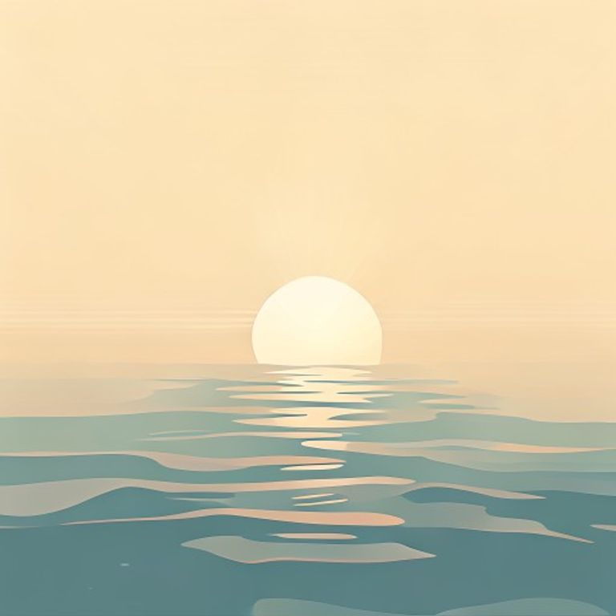
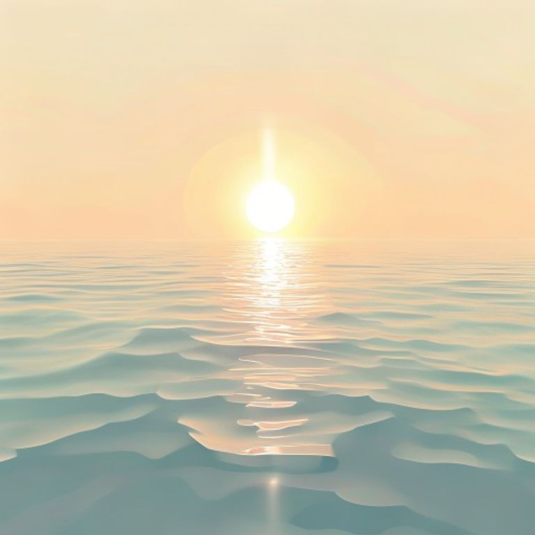
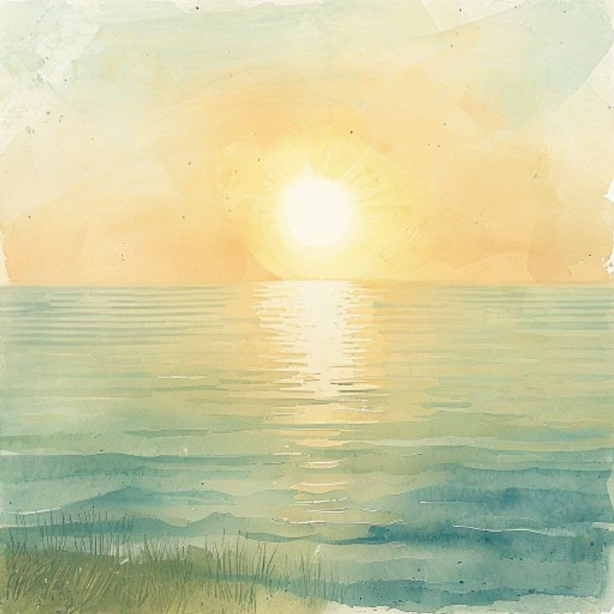
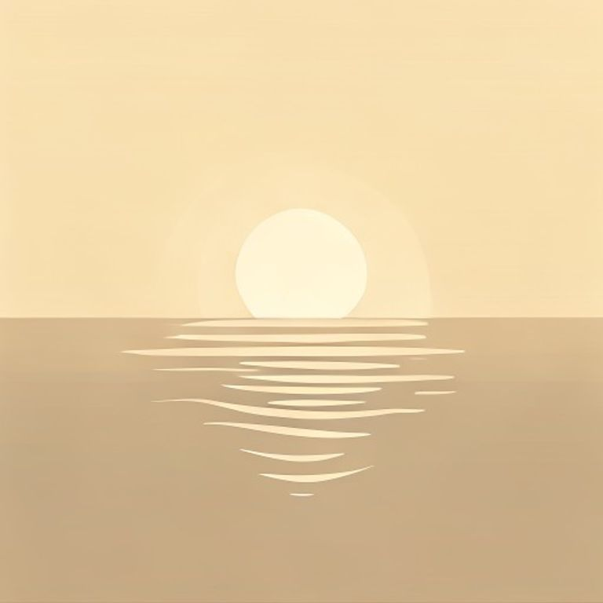
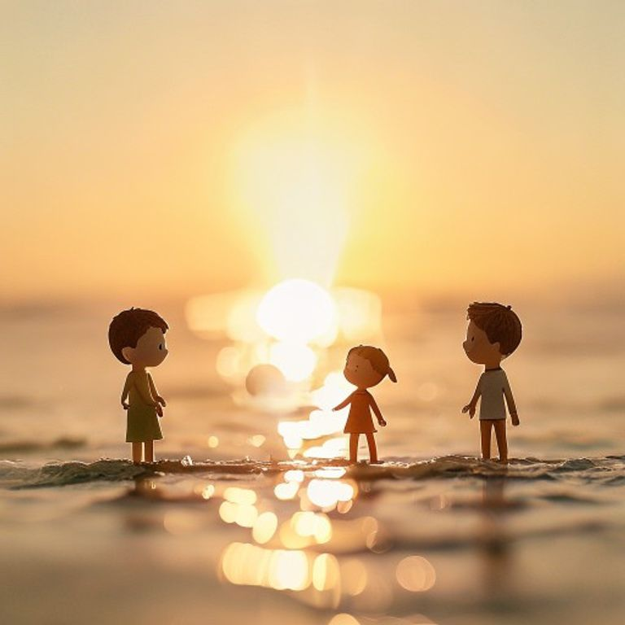

Subjecte comu (mateix per a tots, seed=42):
a warm morning sun shining over a calm sea, water vapour rising gently from the surface towards the sky, three-quarter view, eye-level, soft horizon lineflat vector illustration, clean geometric shapes, bold simple outlines, limited flat color palette, smooth shapes, friendly editorial style, no gradients, no texture, centered composition

isometric 3D illustration, 30 degree angle, clean geometric shapes, crisp edges, limited color palette with soft pastels, subtle shading, infographic textbook style, high clarity

soft watercolor storybook illustration, gentle wet-edge washes, warm palette of ochre sap green and dusty blue, hand-drawn feel, cozy lighting, loose brushwork, paper texture background, children book aesthetic

minimalist flat icon, single concept, centered, thick rounded outlines, two or three flat colors, solid shapes, no gradient, generous padding, pictogram style, high legibility

handmade claymation style, stop-motion plasticine figures, soft studio lighting, visible fingerprint texture, saturated but warm colors, shallow depth of field, tabletop scene, cheerful children's educational look
